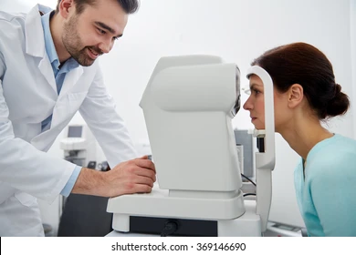
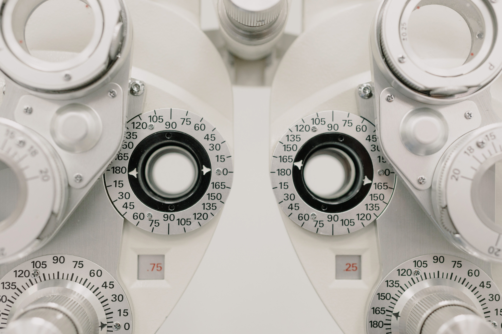
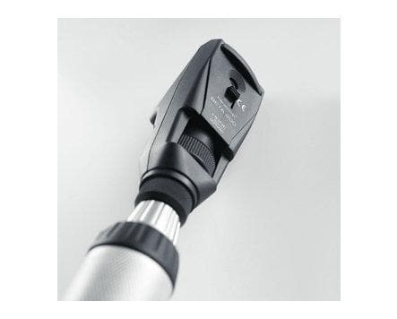
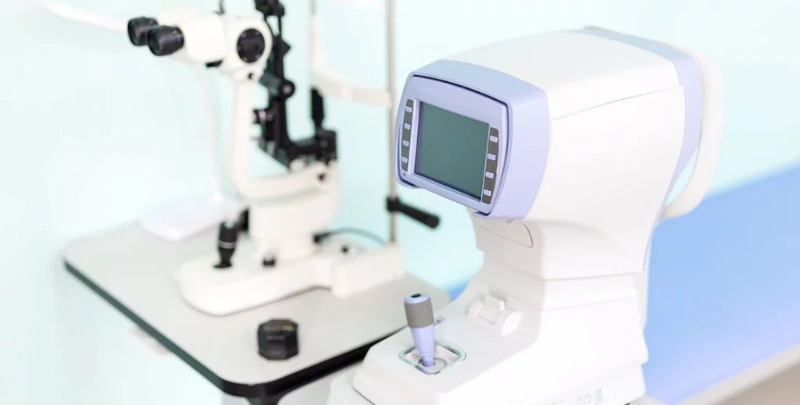

TONOMETER
Tonometry is a test to measure the pressure inside your eyes. The test is used to screen for glaucoma. It is also used to measure how well glaucoma treatment is working.
More details



AUTOREFRACTOR
An auto-refractor or optometer is an instrument that helps in the automated assessment of refraction.
More details